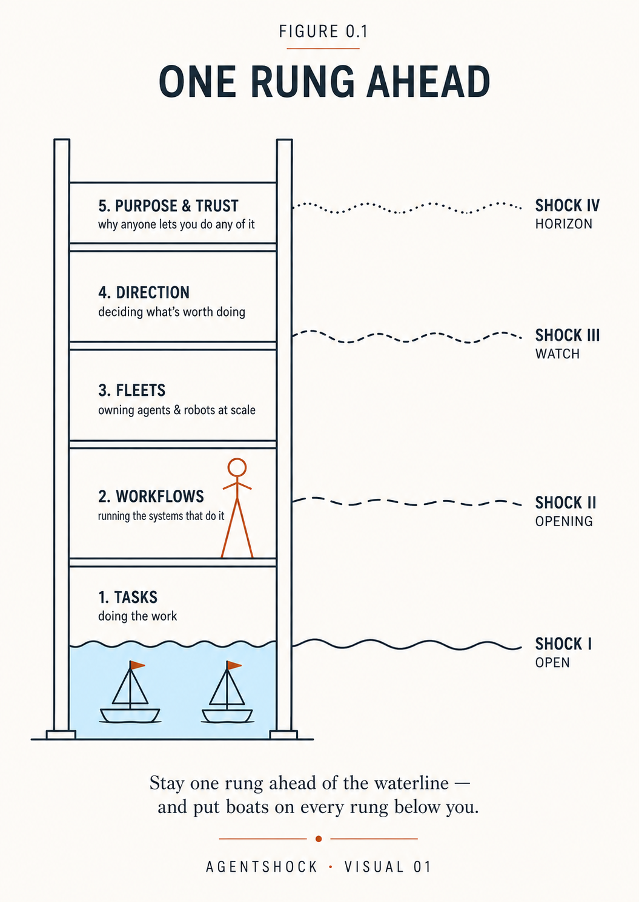
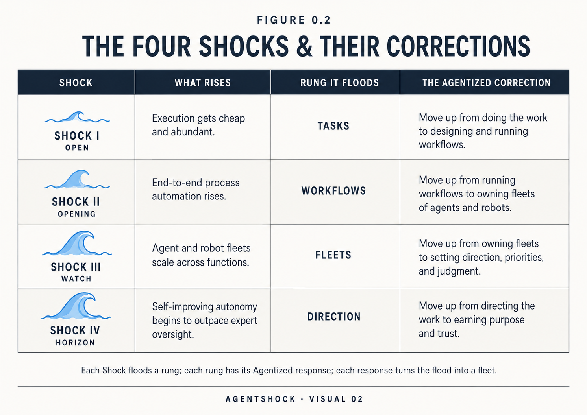

The Rising Water
Sarah Chen got to the factory floor at 6:40 on a Tuesday morning and found that the night had done a day's work without her.
The scheduling agent her team had switched on three weeks earlier had run all night. It had caught a maintenance conflict on Line 2, reshuffled two shifts around a late materials delivery, and left a tidy log explaining every choice — the kind of log her best supervisor would write if her best supervisor never slept. John Martinez, twenty-two years on that floor, read it over her shoulder and said the thing everyone in American business is going to say, in one form or another, within the next few years:
"So what exactly do you need me for?"
This book is our answer to John's question — and to Sarah's, which is harder: what do I do with a workforce that suddenly includes machines that work while we sleep?
Here is the answer in one image. Machine capability is rising like a tide. It has already covered the routine cognitive work — the drafting, the reconciling, the answering — and it is not going to stop. It will rise in four surges we call the Four Shocks: digital agents (that was Sarah's Tuesday morning), Physical AI, AGI-class systems, and, somewhere past the horizon we can honestly see, superintelligence. You cannot vote on the water. Neither could the factory owners who met electricity, or the retailers who met the internet.
What you control is your altitude. Above the waterline is a ladder — Tasks, Workflows, Fleets, Direction, and at the top, Purpose & Trust — and everything in this book is about climbing it one rung ahead of the water, then turning around and putting boats to work on the rungs you've left behind. Because here is the secret the panic headlines never print: a flooded rung is not a loss. It is the cheapest, most tireless workforce in history — if you own the boats.
John Martinez, by the end of this book, will be running three of them.

Stay one rung ahead of the waterline — and put boats on every rung below you.
AgentShock · Visual 01One of us saw this water coming twenty-three years ago. In March 2003, Jas Dhillon presented a U.S. defense modernization command with an architecture of goal-driven intelligent agents that could reason over incoming data, collaborate in communities, and act or escalate to human controllers. The technology of the day could not yet deliver those ideas; they had to wait. In the years since, he has kept building the coordination systems those ideas pointed toward: a marketplace connecting the sustainable aviation fuel supply chain from feedstock to flight, automation deployments for financial and professional-services firms, and systems that compress multi-hour financial-operations processes into minutes. What changed in this decade was not the idea of software that acts. It was that the technology finally caught up to it.
Mark Fidelman built his career on the other side of the water, marketing and growth, always the early adopter while others clung to old playbooks. In 2012 he publicly predicted machine intelligence would cross into autonomy within a generation, a claim that drew more eye-rolls than agreement, and he spent the following decade inside the industry that prediction implied, from AI podcasting to AI infrastructure. When we sat down to write AgentShock, we thought we were writing a book about AI. Halfway through, we realized we were also writing a book about ourselves because adoption of AI is personal before it is organizational. It forces us to confront our habits, our fears, and our vision of what meaningful work should be.
And it forces companies like Sarah's. Chen Innovations is a precision-manufacturing company in Ohio — the kind of unglamorous, essential business that quietly makes the parts the modern world runs on. When this book opens, her revenue is steady, her margins are thinning, her competitors are experimenting loudly, and her veteran workforce is proud, skilled, and anxious. Sarah has read the breathless headlines and the doomsday ones. What she can't find is a map, a way to bring intelligent agents into her business that compounds her people's strengths instead of discarding them. Her mantra, printed on a poster above the factory floor, sets the bar: Innovation with Heart. John Martinez is watching to see whether the mantra survives contact with the machines.
This book is the map Sarah was looking for. You will meet her again at the end of it, and by then the crossroads will look very different.
If some of this makes your chest tighten, good — that reaction has a name, and naming it is the first step. We call it AgentShock: the disorientation you feel when the water reaches your rung, when innovations arrive faster than you can absorb them and your playbook goes stale in real time. Most books treat that feeling as a problem to soothe. We treat it as an instrument to read. AgentShock is a signal, not a siren: it is your own personal tide gauge telling you exactly which rung you're standing on. This book will teach you to read it that way, and then to act on it. There are specific routines in Part III for regaining footing, and a chapter in Part II on what leaders owe the people feeling it.
What does it mean, practically, to become agentized? It means redesigning your organization and, for many readers, your career around the ladder. Humans hold direction, connection, judgment, relationships, and ethics: the rungs machines cannot occupy. Agents execute, learn, and scale: boats on every rung the water has taken. The result is not the same work done slightly faster. It is a step-change, an organization that moves at machine speed on its flooded rungs while its people do the climbing work: creativity, strategy, and the human touch.
Whether you lead an enterprise, manage a team, or are charting your own path, the tide will reach you. For CEOs, the mandate is strategic: read the gates, align the boats to the value engine, set the guardrails, and lead the climb. For managers, the mandate is operational: redesign the workflows, coach hybrid human-and-agent teams, and measure what the boats actually earn. For individual contributors, the mandate is personal: find your own waterline, climb one deliberate rung at a time, and launch a fleet of your own.
This book climbs the ladder, Part by Part, with the water rising one Shock at each Part opener:
Chapter 1 — One Rung Ahead gives you the whole frame in one sitting: the tide, the ladder, the boats, the rule.
Part I — Read the Water teaches the sailor's first skill: where agents already do business with agents (and why your website is becoming a legacy interface), and how to read what's coming without believing a single prediction — gates, not dates.
Part II — The Workflows Rung is the first climb: redesigning work rather than sprinkling agents on the org chart, answering AgentShock with a ladder and a compact instead of reassurance, and putting papers on every boat — an owner, a passport, autonomy earned through evidence.
Part III — Your Own Ladder sets the company aside: your personal waterline audit, your climb, your first fleet of five boats, and how to rent machine muscle and mind without letting the crutch become a leg you no longer have.
Part IV — The Fleets Rung is scale: the shipyard that separates paying pilots from pilot theater, four public crossings that prove the pattern in every kind of water, and the honest ledger on the water growing hands — Physical AI, timesheets over backflips.
Part V — The Top Rungs finishes the climb: the night a machine answered the CEO question and handed back the only part it couldn't hold, what the view costs whoever holds the top rung, and the factory floor where John Martinez gets his answer.

Each Shock floods a rung; each rung has its Agentized response; each response turns the flood into a fleet.
AgentShock · Visual 02Why now: The gate on Shock I is open — agents complete hours of real work unattended, which changes the unit economics of work itself: latency, cycle time and 24/7 throughput on everything routine. The advantage compounds; waiting doesn't.
What to do first: Sound your own water. Pick the one workflow where the water is provably highest, sort its steps onto the ladder — agent-led, human-led, genuinely shared — and launch one papered boat with a single accountable owner and a written gate for what "graduates" means.
How to govern: Papers before scale. Every boat gets an owner, a passport, and autonomy it earns through logged evidence — with human tripwires wherever the water is deep. An unowned agent is a liability you have already incurred.
How to measure: A simple triad — time-to-complete, right-first-time quality, cost-per-case — plus one human metric (time returned to teams), so you can prove you are compounding talent, not corroding it. Watch the timesheets, not the demos.
What to expect: Early wins range from meaningful cycle-time cuts to measurable service gains — magnitude varies by task. The bigger prize is positional: the capability to turn any workflow into a boat, which compounds while tools commoditize. Efficiency is the opening move, altitude is the game.
Three notes from the water's edge as we write, each expanded later in the book. Enterprise platforms now ship agents, not chat: the major vendors' platforms let ordinary teams build domain-specific autonomous agents inside their existing CRM and service flows, thousands were built within weeks of general availability. Agents now act in real software: the newest systems operate applications directly, even steering a web browser when no API exists, which quietly expands the universe of automatable work far beyond what most process maps assume. The strategy houses have caught up: independent research now frames agents as a CEO-level pivot, beyond pilots, toward custom agents aligned to end-to-end processes with governance built in, which is precisely the shipyard this book will teach you to run.
The water is not waiting for consensus, and neither should you. Your altitude is the only variable you control. Let's find out what rung you're standing on.